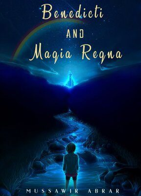

Benedicti & The Magia Regna
A five-year-old waits every night for his magic stones, which take him to a world with everything he wants except his parents. Selected among the top twenty-five submissions in a national short-story competition, and published as my first book.
Read about the book